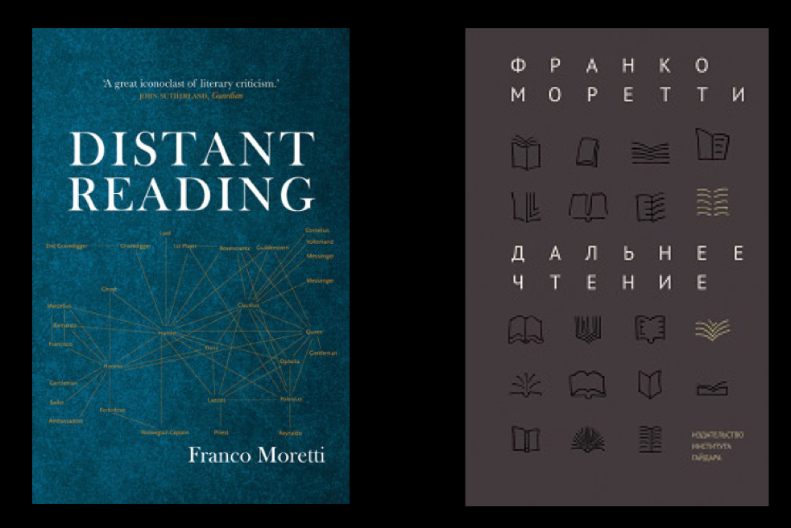
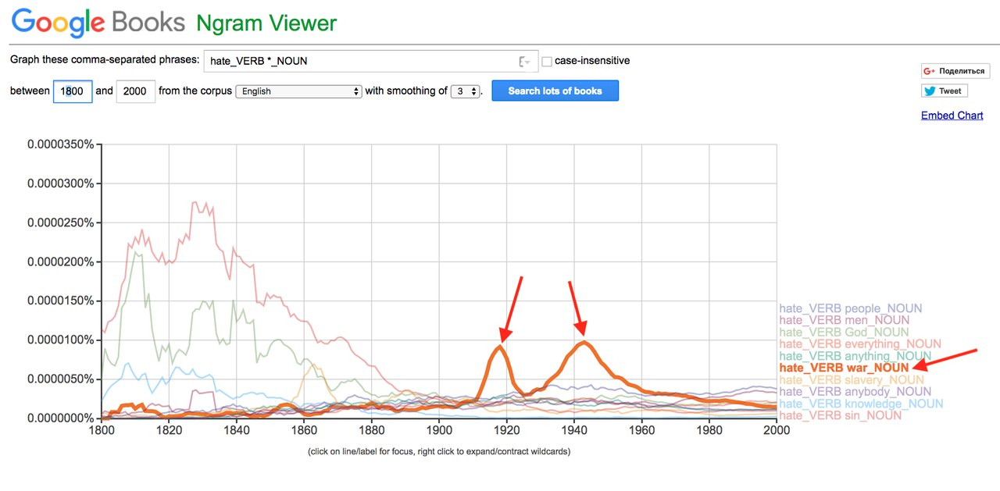
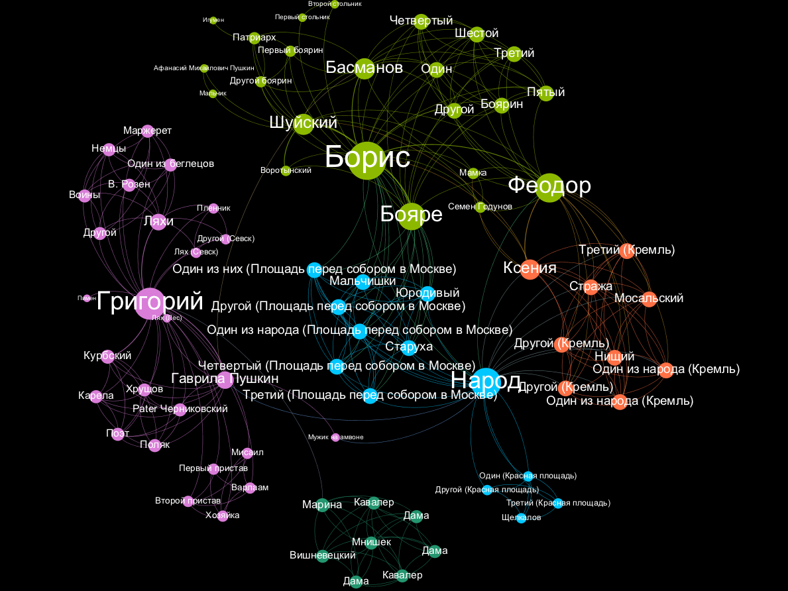

Цифровые методы в гуманитарных науках
вводная лекция, 11 января 2020

Меня зовут Даня, я отсюда:

Хто я?

Хто я?
- Компьютерный лингвист (специалист по Natural Language Processing)
- Окончил комп.лингвистику в Вышке
- ABBYY, извлечение информации из текстов
- Цифровой литературовед
- Диссертация по цифровым подходам к исследованию «Войны и мира»
- Со-основатель проекта rus.dracor.org
- Программирующий гуманитарий (т.е. занимаюсь Digital Humanities)
Мои активности
Некторые пары проведет Франк Фишер

План на сегодня
- Что будет на курсе?
- Чем и как мы будем заниматься?
- Что это за "цифровые гуманитарии"?ü¶Ñ
- Где они обитают?
- Опрос (не на оценку)
- ....–∏–∏–∏–∏–∏ –≤—ã—Ö–æ–¥–Ω—ã–µ!ü•§
Что будет на курсе?
Чем мы займемся на этом курсе
- Обсудим, что меняет «погружение культуры в цифру»: какие новые способы исследования у нас появились — и что они могут дать
- Изучим несколько методов/инструментов цифровых гуманитарных исследований
- Почитаем важные тексты о цифровых исследованиях культуры, литературы и общества
- Вы поделаете собственные мини-исследования
Структура курса
Раньше это был полугодовой курс
'Введение в цифровые гуманитарные исследования'
Но потом...
Что будет в "части 1" (модуль 3)
| Дата | Тема |
|---|---|
| 11 января (сегодня) | Цифровые гуманитарии и где они обитают: введение в Digital Humanities с примерами |
| 18 января | Культуромика и Cultural Analytics: исследования культуры в эпоху Big Data |
| 25 января | Distant Reading ("Дальнее чтение") и корпусные методы в филологии |
| Дата | Тема |
|---|---|
| 1 февраля | Количественные методы определения авторства и стилометрия: почему это работает и к чему можно применить (лекция, начало практики в stylo) |
| 8 февраля | Стилометрия: больше практики в stylo, продвинутые возможности, техническая консультация |
| 15 февраля | Ваши презентации групповых исследований №1 |
| Дата | Тема |
|---|---|
| 22 февраля | Сетевой анализ (лекция, начало практики в Gephi) |
| 29 февраля | Сетевой анализ: продолжение практики в Gephi, продвинутые возможности, щепотка программирования (для желающих) |
| 14 марта | Коворкинг и техническая консультация |
| Дата | Тема |
|---|---|
| 21 марта | Ваши презентации групповых исследований №2 |
Оценка за курс
0,5 * первая презентация + 0,5 * вторая презентация + 0,05 * оценка за индивидуальный доклад
Как происходит ваша работа
- Вы объединяетесь в команды по 3-4 человека
- И делаете мини-исследование:
- Идея
- Сбор данных
- Анализ
- Интерпретация и презентация
- При анализе нужно применить какой-то из изученных методов (можно сразу несколько)
Исследования прошлых лет можно посмотреть
- Тут
- И вот тут
- Репортажи с презенатций прошлых лет: раз, два, три
Коммуникация!
- Ссылки на презентации будут на странице курса: danilsko.github.io/dhminor/
- Ссылки + обсуждения — чат в телеграме: Кликни чтоб добавиться
- Вариант — написать мне (@skorinkin), я добавлю
- Плюс старый добрый email
Короткая ссылка на эту презу:
Теперь о Digital Humanities
Потому что именно этим мы тут и будем заниматься
Зачем нужна эта лекция?
- Посмотреть, что есть внутри Digital Humanities...
- ...и вообще нужен ли этот термин
- Исчислить главные направления
- Понять, куда смотреть и за чем следить
- После этой пары вы легко сориентируетесь сами
А кто слышал про Digital Humanities?
Digital Humanities
или …Digital Humanities — о том
…что могут информационные технологии в
- филологии (литературоведении)
- культурологии
- исторической науке
- ...далее везде!
Пример 1 (литературный)
Пример 2 (исторический)
- Марта Баллард была акушеркой в штате Мэн
- Вела дневник с 1785 по 1812 год
- Приняла 814 родов и сделала 10000 записей в дневнике
- Cameron Blevins исследовал дневник с помощью тематич. моделирования
Дневник исследовали с помощью тематического моделирования
Темы в дневнике
- MIDWIFERY: birth deld safe morn receivd calld left cleverly pm labour fine reward arivd infant expected recd shee born patient
- CHURCH: meeting attended afternoon reverend worship foren mr famely performd vers attend public supper st service lecture discoarst administred supt
- DEATH: day yesterday informd morn years death ye hear expired expird weak dead las past heard days drowned departed evinn
- GARDENING: gardin sett worked clear beens corn warm planted matters cucumbers gatherd potatoes plants ou sowd door squash wed seeds
- SHOPPING: lb made brot bot tea butter sugar carried oz chees pork candles wheat store pr beef spirit churnd flower
- ILLNESS: unwell mr sick gave dr rainy easier care head neighbor feet relief made throat poorly takeing medisin ts stomach
Gardening

cold weather
Пример 3 (не про тексты)

Айтрекер


Цифровые технологии помогают исследовать потребления культурных продуктов (например, комиксов)
Итак, «дивный цифровой мир» несет гуманитариям
- новый масштаб анализа
- новые методы исследования
- новые объекты исследования
На этом фоне и возникает хайп по 'Digital Humanities'
Что есть Digital Humanities (и есть ли они) — повод для тонны рефлексии внутри самих Digital Humanities
Определения Digital Humanities
Digital humanities (DH) is an area of scholarly activity at the intersection of computing or digital technologies and the disciplines of the humanities.
Using computational tools to do the work of the humanities
The use of digital tools and methods in humanities study and dissemination.
DH is inquiry enabled by digital methodologies or modes of research, dissemination, design, preservation, and communication that rely on algorithms, software, and/or the Internet network for processing data.
Но никто же не говорит про «цифровую физику»?
В гуманитарных науках при переходе к цифровым методам происходит более глубокий сдвиг
DH is at its best when it embraces the digital not simply as a means to the traditional ends of scholarship, but when it transforms the nature of what humanists do. The digital allows for scholars, librarians, archivists, and curators to engage much more directly with each other and the public. Further, it allows them not simply to write for each other, but to build things for everyone.
Это качественный сдвиг
Это качественный сдвиг
- Гуманитарии почти не говорили на формальных языках — теперь нужна дискретность
- У гуманитариев много неоднозначности — компьютеры требуют однозначности
- Гуманитарии редко производили "продукты" и "проекты" — в Digital Humanities это стандарт
- Коллективные исследования вместо индивидуальных
Проектные humanities
Цифровые гуманитарные науки — это область исследований, обучения и созидания, созданная на стыке компьютерных и гуманитарных наук.
DIY-humanities
We don’t just make for the humanities, we just make. [...] One of the defining features of some of the best and the brightest in the digital humanities isn’t digital per-say, it has to do with a pervasive kind of scrappyness. It’s about having a do it yourself mindset.
The Digital Humanities is both a field with a discernable set of academic lineages, practices, and methodologies and a vague umbrella term used to describe the application of digital technology to traditional humanistic inquiry. Ultimately, what sets DH apart from many other humanities fields is its methodological commitment to building things as a way of knowing.
DH is at its best when it embraces the digital not simply as a means to the traditional ends of scholarship, but when it transforms the nature of what humanists do. The digital allows for scholars, librarians, archivists, and curators to engage much more directly with each other and the public. Further, it allows them not simply to write for each other, but to build things for everyone.
Digital Humanities is the integration of sophisticated, empirical techniques utilizing tools and technologies typically associated with practical sciences into the study of traditional humanities questions. It represents a more exploratory and less quantitative approach than social sciences in the use of such tools, but it also represents ambitious attempts to model nuanced human wisdom in ways that, like early flying machines, are beautiful, quite impractical and often fail.
Строить самолеты в одиночку — тяжело
[Digital Humanities is] a kind of scholarship that requires design, management, negotiation, and collaboration.
Digital Humanities — коллективное дело
Коммунальные определения Digital Humanities
It is both a methodology and a community.
A “community of practice” (to borrow Etienne Wenger’s phrase) whereby the learning, construction, and sharing of humanities knowledge is undertaken with the application of digital technologies in a reflexive, theoretically informed, and collaborative manner.
Коммунальные определения Digital Humanities
The phrase [digital humanities] has use-value to the degree that it can serve as an umbrella under which to group both people and projects seeking to reshape and reinvigorate contemporary arts and humanities practices, and expand their boundaries.
И еще DH — это ценностный момент:
Taking tools built by warmongers, spy agencies & investment bankers and using them to study literature, philosophy, culture and the classics
Закрывая тему: не факт, что определения вообще нужны
I think digital humanities, like social media, is an idea that will increasingly become invisible as new methods and platforms move from being widely used to being ubiquitous. For now, digital humanities defines the overlap between humanities research and digital tools. But the humanities are the study of cultural life, and our cultural life will soon be inextricably bound up with digital media.
Digital Humanities — это просто удобный лейбл, "временная переменная"
A name that marks a moment of transition; the current name for humanities inquiry driven by or dependent on computers or digitally born objects of study; a temporary epithet for what will eventually be called merely Humanities.
А term of tactical convenience
Но не стоит недооценивать convenience!

Типичная команда DH-проекта
Никогда бы не собралась, если бы не было "зонтика DH" ☂️
Развлечение
whatisdigitalhumanities.com — 817 определений
Зайдите и прочитайте одно
Далее
- üåå галактика Digital Humanities: что в ней происходит?
- üëΩ поиск разумных форм жизни: где обитают цифровые гуманитарии?
- üìö что читать к следующему разу?
- üíª –æ–ø—Ä–æ—Å
- ü•§ –≤—ã—Ö–æ–¥–Ω—ã–µ
Галактика Digital Humanities
На стыках каких дисциплин рождается Digital Humanities?

И что делают?
- Поиск закономерностей,трендов в больших массивах культурных объектов; масштабированиe Humanities
- Новые цифровые методы анализа культурных объектов; моделирование в Humanities
- Визуализация и новые формы передачи гуманитарного знания широкой публике
- Оцифровка культурного наследия и создание инструментов работы с ним
Поиск закономерностей и культурных трендов, массовый анализ
- ...художественных текстов филологами («Distant Reading»)
- ...любых текстов — для получения новой информации о развитии культуры и общества («Culturomics»)
- ...медиаконтента, в т.ч. пользовательского («Cultural Analytics»)
- ...изображений («Visual Analytics») и видео («Distant Viewing»)
- ...археологических находок
- ...геоданных (например, исторические GIS)
Идея "Дальнего" чтения (Distant Reading)
Идея "Дальнего" чтения (Distant Reading)
"[…] if you want to look beyond the canon […], close reading will not do it. It’s not designed to do it, it’s designed to do the opposite. […] we know how to read texts, now let’s learn how not to read them. Distant reading: where distance […] is a condition of knowledge […]."Идея "Дальнего" чтения (Distant Reading)
"Если же мы хотим выйти за пределы канона […], то пристальное чтение нам не подходит. Оно не создано для таких задач, оно создано для решения задач противоположных. […] мы умеем читать тексты, теперь нужно научиться не читать их. Дальнее чтение, для которого расстояние […] является условием получения знаний […].»
“Literature scholars should stop reading books, and start counting, graphing, and mapping them instead.” Franco Moretti (2005)
Литературоведы должны прекратить читать книги и начать считать, визуализировать и картографировать их Франко Моретти (2005), перевод мой
Пример "Дальнего" чтения: затихание романа

Пример "Дальнего" чтения: сокращение длины названий

«Основная метаморфоза названий XVIII в. проста: за время жизни двух поколений они становятся намного короче».

А как выглядели длинные?
Письмо от Х—г—г, эсквайра, одного из лордов опочивальни, к молодому шевалье и единственному человеку из его свиты, сопровождавшему его во время долгого путешествия от Авиньона по Германии и другим местам; содержит множество замечательных и чувствительных происшествий, случившихся с П — в его таинственном странствии. Близкому другу.
(A letter from H—g—g, Esq; One of the Gentlemen of the Bedchamber to the Young Chevalier, And the Only Person of his Retinue that attended him from Avignon, in his late Journey through Germany, and elsewhere)

«Сегодня это звучит странно, но на самом деле краткий пересказ в начале романа имеет смысл: роман — это повествование, а заглавие (в случае с титульным листом можно понять, зачем книге требовалась целая страница для титула) в качестве пересказа было укороченным повествованием — оно представляло основные события истории, персонажей, место действия, концовку. Это имело смысл».
Так почему же они исчезли?
Версия Моретти
<..> культурная экосистема изменялась таким образом, что становилась несовместимой с этими принципами: на протяжении XVIII в. количество опубликованных романов в Британии существенно выросло <..>
Версия Моретти
В третьей и особенно в четвертой четверти XVIII в. Monthly и другие журналы стали печатать рецензии на многочисленные новые романы, что сделало заглавия-пересказы в некотором смысле избыточными <…>
Версия Моретти
Кроме того, поскольку количество новых романов продолжало расти, временное окно для представления каждого из них на рынке сузилось, и для названия стало жизненно необходимым быстро и эффективно привлекать внимание публики. Пересказы не были для этого приспособлены. Они хорошо описывали книгу саму по себе, однако, когда дело касалось переполненного рынка, короткие заглавия справлялись лучше — хотя бы потому, что их было легче запомнить.
'Культуромика'
- Michel, Jean-Baptiste; Liberman Aiden, Erez (2011). Quantitative Analysis of Culture Using Millions of Digitized Books. Science. 331 (6014): 176–82
Google Books
- 'We constructed a corpus of digitized texts containing about 4% of all books ever printed. Analysis of this corpus enables us to investigate cultural trends quantitatively. We survey the vast terrain of “culturomics”, focusing on linguistic and cultural phenomena <...>'
Культуромика в Google Books
Культуромика в Google Books
Культуромика в Google Books

Культуромика в Google Books

Культуромика в Google Books
Масштабирование не про тексты
Длина кадра в кино

Динамичность и освещенность кадра


И кинопостеры тоже темнеют

Эволюция обложки Time

137 тыс. картин с WikiArt

Меры энтропии и сложности

137 тыс. картин с WikiArt

137 тыс. картин с WikiArt

Новые цифровые методы анализа культурных объектов, моделирование в Humanities
- Сетевой анализ в истории и литературе
- Стилеметрия (авторство, стиль, жанр, translation studies)
- «Семантическая разметка» художественных текстов
- 3D-моделирование материальных памятников
Стилометрия

Сетевой анализ

Сетевой анализ
Из диссера Дани Скоринкина
Сетевой анализ

Сети можно сочетать с картами (GIS)

Проект Mapping the Republic of Letters
computer vision для исследования сериалов
- T. Arnold, L. Tilton, A. Berke. Visual Style in Two Network Era Sitcoms // Cultural Analytics (preprint), 2018
- Используют технологии компьютерного зрения (распознавание лиц с помощью нейросетей) для анализа ситкомов
Два сериала-конкурента — от двух каналов-конкурентов
| Bewitched (у нас — «Моя жена меня приворожила») | I Dream of Jeannie («Я мечтаю о Джинни») |
| Телеканал ABC | Телеканал NBC |
| 1964 – 1972 | 1965 – 1970 |
| Офисный клерк женится на девушке, та оказывается колдуньей | Астронавт при приземлении находит бутылку с джином Джинни, она становится его спутницей, далее — романтическим партнером |
Крупный план

3D-моделирование объектов культурного наследия
Визуализация, распространиение, популяризация гуманитарного знания
- Цифровые издания
- GIS как метод представления исторических знаний
- Виртуальная, дополненная, смешанная реальность (музеи, педагогика)
- Всякая гуманитарная инфографика
Оцифровка культурного наследия
- Цифровые архивы
- Форматы и стандарты представления гуманитарных данных в машиночитаемом виде (TEI, базы данных, LOD)
- Краудсорсинг для оцифровки
- OCR (оптическое распознавание символов)
Виртуальные музеи

Музеи с дополненной реальностью

DH-сообщество заинтересовалось

Геоинформатика (GIS) и гуманитарии

The Digital Atlas of Roman and Medieval Civilizations
GIS и гуманитарии

GIS и гуманитарии

GIS и гуманитарии

Цифровые издания
Цифровые издания
Цифровые издания
Оцифровка и создание инструментов
OCR (оптическое распознавание символов)

Оцифровка рукописного текста
См. Transcribus
Краудсорсинговая оцифровка
Стандарт машиночитаемого текста в гуманитарных областях

Text Encoding Initiative (TEI/XML)
Это как раз служит основой для штук типа сетевого анализа
Цифровая консервация в археологии

Где обитают цифровые гуманитарии?
Журналы
- Digital Humanities Quarterly
- Digital Scholarship in the Humanities (OUP)
- Frontiers in Digital Humanities (неактивен)
Конференции
- Ежегодная мировая конференция альянса ADHO
- Digital Humanities in the Nordic countries
- Digital Humanities im deutschsprachigen Raum
- LaTeCH/Clfl (отпочковалось от комплингвистики)
- Другие компьютерно-лингвистические площадки, не чуждые DH
- Всякие Digital Libraries конференции
Соцсети
- TWITTERRR1111111!!!!
- и еще Twitter
См. например, по хэштегу
Есть несколько исследований Twitter-сообщества DH

- "Квартира пуста, но мы здесь, здесь мало что есть, но мы есть. Дождь для нас". (В. Цой)
- Но мы ждем перемен
- Была мощная конференция DH Russia 2017
- Тогда официально запустилась российская ассоциация DH (входит в ADHO через EADH)
- В сентябре будет конференция EADH в Красноярске
- Есть магистратуры в Вышке, ИТМО, ТГУ, ТюмГУ, ЮФУ...
А что в России?
Доклады на следующий раз
- Lev Manovich. The Science of Culture? Social Computing, Digital Humanities and Cultural Analytics. (1 человек)
- Ted Underwood. How not to do things with words. (1 человек)
Добровольцы?